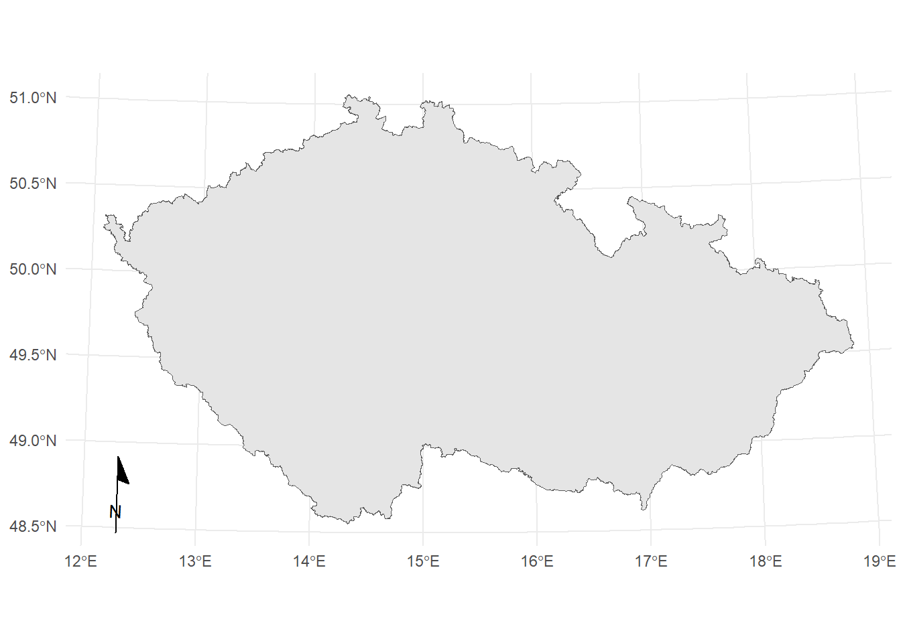
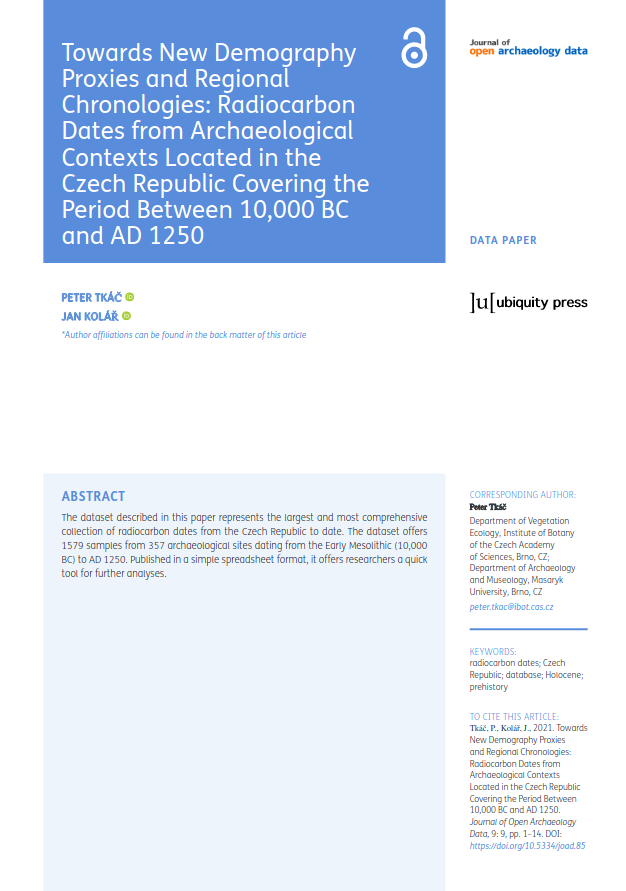
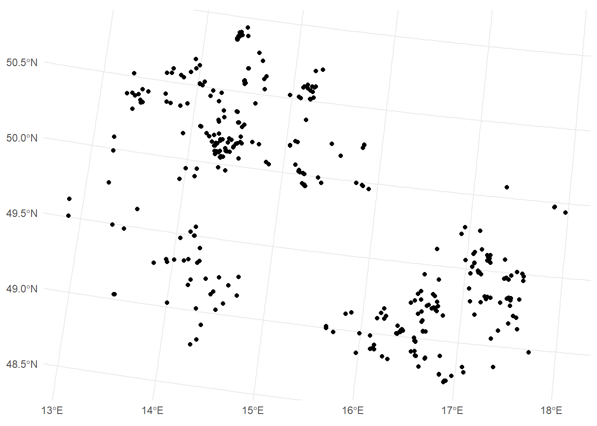
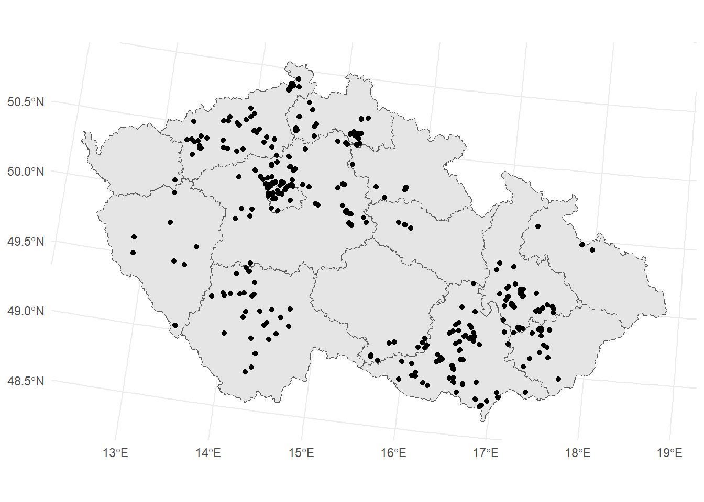
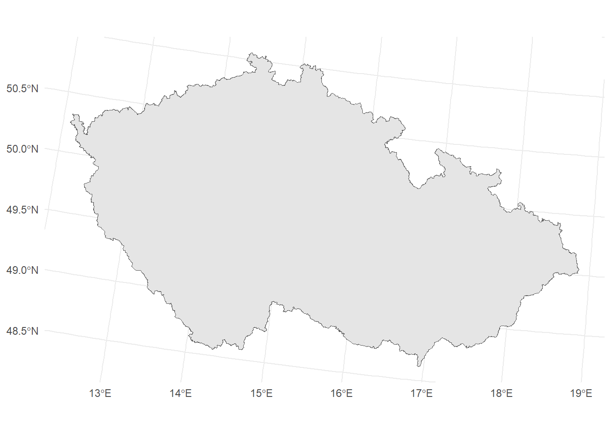
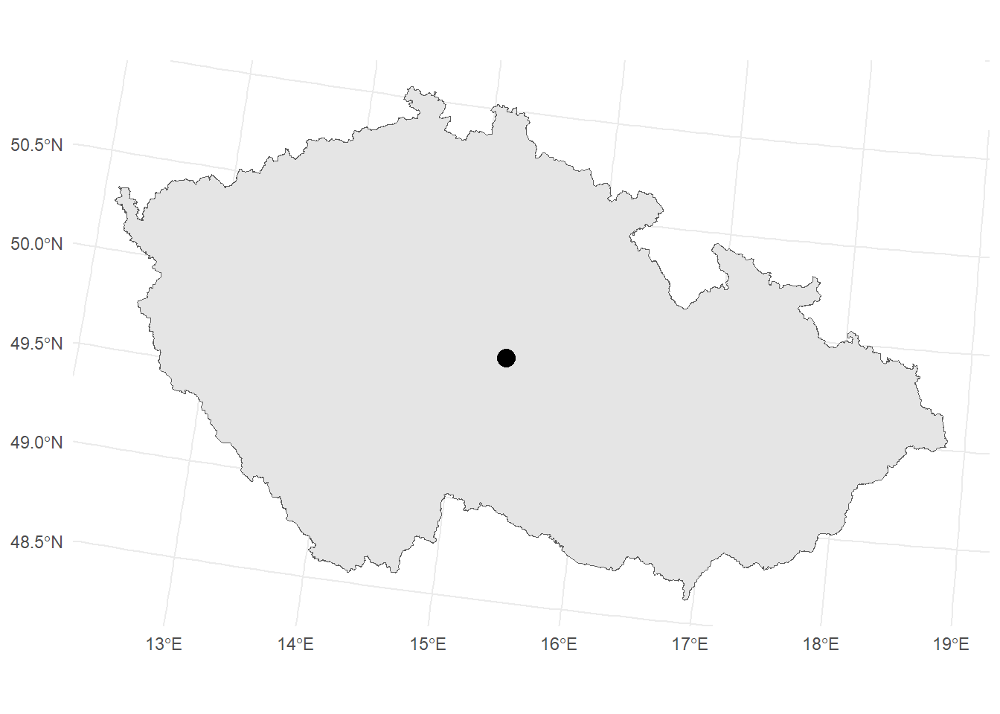
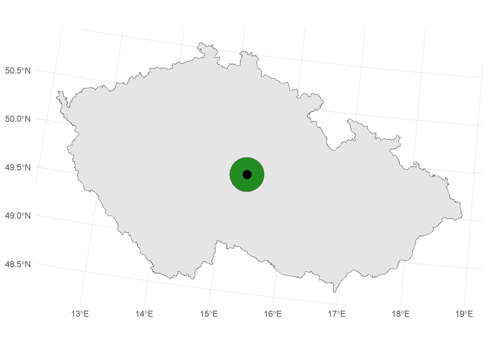

Considering space
Objectives
- Learn what is spatial data.
- Learn how spatial data is represented in R.
- Learn basic operations with vector data.
- Create basic maps.
What is Earth’s shape?
- Spheroid
- Ellipsoid
- Geoid
- Potato

Projections
How to transform a curved surface of an ellipsoid into a plane?


Coordinate reference systems
- CRS defines how spatial data relate to the surface of the Earth.
Geographic
WGS 84
- EPSG: 4326
- latitude: N/S, 0˚ (equator) – 90˚ (poles)
- longitude: E/W, 0˚ (prime meridian) – 180° (antimeridian)
- in degrees, minutes:
N 49°44.62543', E 15°20.31830' - in decimal degrees:
49.7437572N, 15.3386383E - Package
parzerhelps to parse coordinates in weird formats.
Projected
- Many operations can be done only with projected coordinates!
S-JTSK / Křovák East North
- EPSG: 5514
- Czech Republic and Slovakia
- in meters, in negative numbers:
-682473.3, -1089493
WGS 84 / UTM
- EPSG for zone 33N: 32633
- Czech Republic is in zone UTM 33N
Czech Republic in WGS 84

Czech Republic in WGS 84 / UTM

Czech Republic in S-JTSK / Krovak East North

Raster and vector data

Vector data

Points, lines, polygons…
Packages
sf package
- Vector data, simple features
- https://r-spatial.github.io/sf/
- Cheatsheet

Raster data
terrapackage and its predeccessor,rasterstarspackage – spatiotemporal arrays, raster and vector data cubes
Spatial statistics
Making maps
ggplot2tmappackage – thematic mapsleafletpackage – interactive maps
Code along
Dataset

- Dataset from Journal of Open Archaeology Data paper
- Article DOI: 10.5334/joad.85
- Data DOI: 10.5281/zenodo.5728242
- Table
LASOLES_14C_database.csv

Reading the data
- Data is in CSV format, separated by semicolon (
;) - Columns
Latitude_WGS84andLongitude_WGS84 - Coordinate reference system is WGS 84 (EPSG
4326)
lasoles <- read.csv("./data/LASOLES_14C_database.csv", sep = ";")# A tibble: 4 × 5
ID_Date Latitude_WGS84 Longitude_WGS84 Site_category_ENG Contex_dating_AMCR
<chr> <dbl> <dbl> <chr> <chr>
1 CzArch_1 49.1 16.6 hillfort br.st
2 CzArch_5 50.1 14.5 settlement bronz
3 CzArch_6 49.8 17.0 settlement ne.lin
4 CzArch_7 49.8 17.0 settlement ne.lin lasoles_wgs84 <- st_as_sf(lasoles, coords = c(x = "Longitude_WGS84", y = "Latitude_WGS84"), crs = 4326)
head(lasoles_wgs84, 4)Simple feature collection with 4 features and 3 fields
Geometry type: POINT
Dimension: XY
Bounding box: xmin: 14.52986 ymin: 49.05189 xmax: 16.95067 ymax: 50.05246
Geodetic CRS: WGS 84
# A tibble: 4 × 4
ID_Date Site_category_ENG Contex_dating_AMCR geometry
<chr> <chr> <chr> <POINT [°]>
1 CzArch_1 hillfort br.st (16.62982 49.05189)
2 CzArch_5 settlement bronz (14.52986 50.05246)
3 CzArch_6 settlement ne.lin (16.95067 49.77669)
4 CzArch_7 settlement ne.lin (16.95067 49.77669)Reprojecting CRS
Function st_transform(x, crs)
EPSG codes:
- WGS 84:
4326 - S-JTSK East-North:
5514 - UTM 33N:
32633 - Find more at https://epsg.io/
lasoles_sjtsk <- st_transform(lasoles_wgs84, crs = "EPSG:5514")
head(lasoles_sjtsk, 4)Simple feature collection with 4 features and 3 fields
Geometry type: POINT
Dimension: XY
Bounding box: xmin: -735634.8 ymin: -1176759 xmax: -566666.7 ymax: -1047924
Projected CRS: S-JTSK / Krovak East North
# A tibble: 4 × 4
ID_Date Site_category_ENG Contex_dating_AMCR geometry
<chr> <chr> <chr> <POINT [m]>
1 CzArch_1 hillfort br.st (-598287.7 -1176759)
2 CzArch_5 settlement bronz (-735634.8 -1047924)
3 CzArch_6 settlement ne.lin (-566666.7 -1099048)
4 CzArch_7 settlement ne.lin (-566666.7 -1099048)Making maps
Geom geom_sf()
ggplot(lasoles_sjtsk) +
geom_sf() +
theme_minimal()
Some background data…
Package RCzechia (Lacko, 2023) has spatial data for the Czech republic…
kraje <- RCzechia::kraje()
head(kraje, 4)Simple feature collection with 4 features and 3 fields
Geometry type: GEOMETRY
Dimension: XY
Bounding box: xmin: 12.40056 ymin: 48.55189 xmax: 15.60422 ymax: 50.61901
Geodetic CRS: WGS 84
KOD_KRAJ KOD_CZNUTS3 NAZ_CZNUTS3 geometry
1 3018 CZ010 Hlavní město Praha MULTIPOLYGON (((14.49806 50...
2 3026 CZ020 Středočeský kraj POLYGON ((15.16973 49.61046...
3 3034 CZ031 Jihočeský kraj MULTIPOLYGON (((15.4962 48....
4 3042 CZ032 Plzeňský kraj MULTIPOLYGON (((13.60536 49...kraje <- st_transform(kraje, crs = "EPSG:5514")
head(kraje, 4)Simple feature collection with 4 features and 3 fields
Geometry type: GEOMETRY
Dimension: XY
Bounding box: xmin: -891822.3 ymin: -1211576 xmax: -665628.7 ymax: -989063.4
Projected CRS: S-JTSK / Krovak East North
KOD_KRAJ KOD_CZNUTS3 NAZ_CZNUTS3 geometry
1 3018 CZ010 Hlavní město Praha MULTIPOLYGON (((-736092 -10...
2 3026 CZ020 Středočeský kraj POLYGON ((-696420.7 -110267...
3 3034 CZ031 Jihočeský kraj MULTIPOLYGON (((-681445.6 -...
4 3042 CZ032 Plzeňský kraj MULTIPOLYGON (((-817386.4 -...Making maps
ggplot(lasoles_sjtsk) +
geom_sf(data = kraje) +
geom_sf() +
theme_minimal()
Geometry operations
Unions
st_union()
head(kraje, 2)Simple feature collection with 2 features and 3 fields
Geometry type: GEOMETRY
Dimension: XY
Bounding box: xmin: -816235.3 ymin: -1109600 xmax: -665628.7 ymax: -989063.4
Projected CRS: S-JTSK / Krovak East North
KOD_KRAJ KOD_CZNUTS3 NAZ_CZNUTS3 geometry
1 3018 CZ010 Hlavní město Praha MULTIPOLYGON (((-736092 -10...
2 3026 CZ020 Středočeský kraj POLYGON ((-696420.7 -110267...republika <- st_union(kraje)
republikaGeometry set for 1 feature
Geometry type: POLYGON
Dimension: XY
Bounding box: xmin: -904576.9 ymin: -1227293 xmax: -431722.5 ymax: -935236.5
Projected CRS: S-JTSK / Krovak East Northrepublika %>%
ggplot() +
geom_sf() +
theme_minimal()
Geometry operations
Centroids
st_centroid()
stred <- st_centroid(republika)
stredGeometry set for 1 feature
Geometry type: POINT
Dimension: XY
Bounding box: xmin: -682473.1 ymin: -1089493 xmax: -682473.1 ymax: -1089493
Projected CRS: S-JTSK / Krovak East Northggplot() +
geom_sf(data = republika) +
geom_sf(data = stred, size = 4) +
theme_minimal()
Buffers
st_buffer()
buffer <- st_buffer(stred, 20000)
bufferGeometry set for 1 feature
Geometry type: POLYGON
Dimension: XY
Bounding box: xmin: -702473.1 ymin: -1109493 xmax: -662473.1 ymax: -1069493
Projected CRS: S-JTSK / Krovak East Northggplot() +
geom_sf(data = republika) +
geom_sf(data = buffer, fill = "forestgreen") +
geom_sf(data = stred, size = 4) +
theme_minimal()
Spatial operations
Topological relations
Many types of raletionships, the most generic one is intersection:
st_intersects(x, y)
prunik <- st_intersects(kraje, stred)
prunikSparse geometry binary predicate list of length 14, where the predicate
was `intersects'
first 10 elements:
1: (empty)
2: (empty)
3: (empty)
4: (empty)
5: (empty)
6: (empty)
7: (empty)
8: (empty)
9: (empty)
10: 1lengths(prunik) [1] 0 0 0 0 0 0 0 0 0 1 0 0 0 0lengths(prunik) > 0 [1] FALSE FALSE FALSE FALSE FALSE FALSE FALSE FALSE FALSE TRUE FALSE FALSE
[13] FALSE FALSE# kraje %>%
# dplyr::filter(lengths(prunik) > 0)
Writing/reading spatial data
st_read() – reads spatial data from the path (data source name, and layer name)
st_write() – writes an object to a specified path (DNS and layer name)
The functions detect what driver to use by the extension.
- For vector data, use
OGC GeoPackageformat (.gpkg) - Do not use ESRI Shapefile (.shp) – it is old and has many limitations (see here for discussion)
st_write(republika, here::here("czrep.gpkg"))Writing layer `czrep' to data source
`<...>/czrep.gpkg' using driver `GPKG'
Writing 1 features with 1 fields and geometry type Polygon.republika <- st_read(here::here("czrep.gpkg"))Reading layer `czrep' from data source `<...>/czrep.gpkg' using driver `GPKG'
Simple feature collection with 1 feature and 1 field
Geometry type: POLYGON
Dimension: XY
Bounding box: xmin: -904576.9 ymin: -1227293 xmax: -431723.3 ymax: -935236.5
Projected CRS: S-JTSK / Krovak East NorthExercise
- Find out how many radiocarbon dated samples are located within distance 15 km (or closer) from Brno.
Brno is this point:
brno <- st_point(c(16.6078411, 49.2002211)) %>%
st_geometry() %>%
st_set_crs("EPSG:4326")- How many of these radiocarbon dates are from hillforts (
Site_category_ENG)? - Create map of the Czech republic with a point showing Brno.
- Create a map of all radiocarbon dated samples in Jihomoravský kraj.
Where to learn more…
- CRAN Task View: Analysis of Spatial Data
- Books: